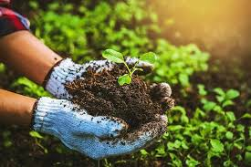
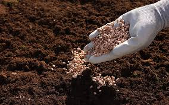
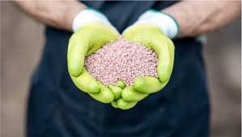
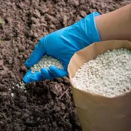
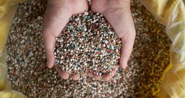
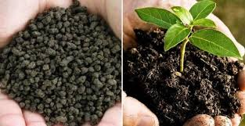

Fertilizers supply essential nutrients that improve soil fertility, plant growth, crop yield, and resistance to disease. Balanced fertilizer use ensures sustainable agriculture and long-term soil health.

Natural fertilizers made from plant and animal waste.

Enhances plant immunity and fruit quality.

Essential for flowering and root development.

Drives leaf growth and chlorophyll production.

Corrects trace-element deficiencies.

Contains beneficial microorganisms.
Email: supportfarmio@ecogrow.com | Phone: +1 (555) 123-4567